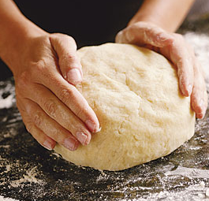

Step 4: Knead gently until the flour is fully incorporated and the dough is soft, smooth, and a little sticky, 30 seconds to 1 minute. (Dont overmix it, or the gnocchi will be tough; the dough should feel very delicate.) Move the dough to one side, making sure the surface underneath it is well floured. Cover it with a clean kitchen towel.
